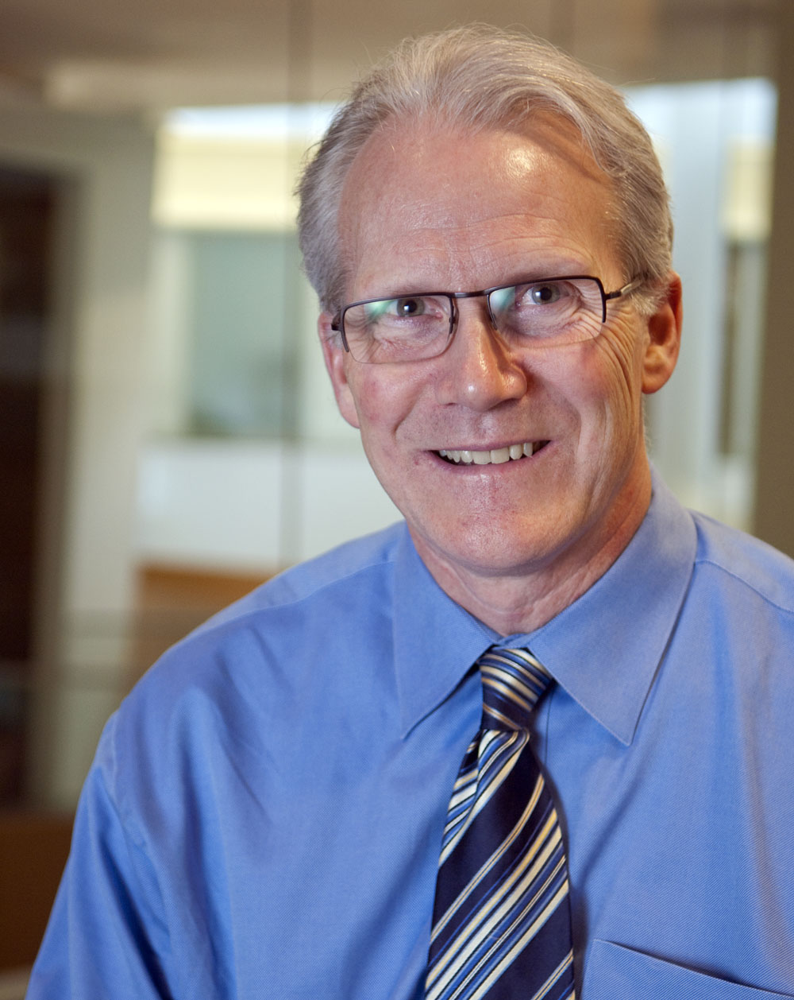
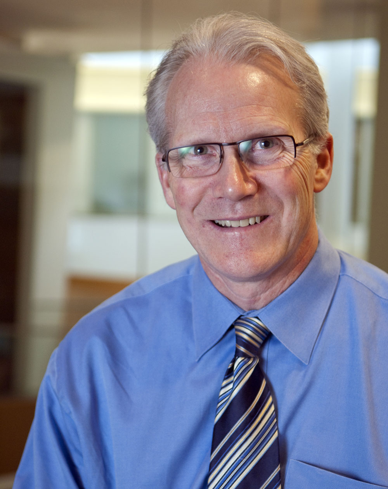

|
Overview
Professor Randal E. Bryant is a pioneer in formal methods and electronic design automation. An event in his honor is being held as part of the International Conference on Theory and Applications of Satisfiability Testing (SAT) conference on August 5, 2022 in Haifa, Israel. This page provides the details about the event including a list of invited speakers. Biography
Randal E. Bryant is the Founders University Professor of Computer Science Emeritus at Carnegie Mellon University. He has been on the faculty at Carnegie Mellon since 1984. He also holds a courtesy appointment in the Electrical and Computer Engineering Department. He served as Dean of the School of Computer Science from 2004 to 2014. Dr. Bryant's research focuses on methods for formally verifying digital hardware, and more recently some forms of software. He is well known for the development of the ordered binary decision diagram (OBDD) data structure, used not just for formal hardware and software verification, but also digital circuit testing and synthesis, AI planning, and combinatorial optimization. In addition, he has developed several techniques to verify circuits by symbolic simulation, with levels of abstraction ranging from transistors to models based on first-order logic. Dr. Bryant has received widespread recognition for his work. He is a fellow of the IEEE and the ACM, as well as a member of the National Academy of Engineering and the American Academy of Arts and Science. His awards include the 1997 ACM Kanellakis Theory and Practice Award (shared with Edmund M. Clarke, Ken McMillan, and Allen Emerson) for contributing to the development of symbolic model checking, as well as the 1989 IEEE W.R.G. Baker Prize for the best paper appearing in any IEEE publication during the preceding year. He received the 2010 ACM/IEEE A. Richard Newton Technical Award in Electronic Design Automation, the 2009 EDAC/IEEE Phil Kaufman Award, and the 2007 IEEE Emmanuel R. Piore Award, reflecting the impact his work has had on tools used by the semiconductor industry for verifying their designs prior to manufacture. Dr. Bryant teaches courses in computer systems and parallel computing. Along with David R. O'Hallaron, he developed a novel approach to teaching about the hardware, networking, and system software that comprise a system from the perspective of an advanced programmer, rather than from those of the system designers. Their textbook ``Computer Systems: A Programmer's Perspective,'' now in its third edition, is in use at over 375 institutions worldwide, with translations into five languages. Dr. Bryant spent the 1989-1990 academic year as a Visiting Research Fellow at Fujitsu Laboratories in Kawasaki, Japan. He spent the 2014-2015 academic year as Assistant Director for Information Technology Research and Development at the White House Office of Science and Technology Policy (OSTP). There he worked on the National Strategic Computing Initiative, issued as Executive Order 13702 in July, 2015. Dr. Bryant received his B.S. in Applied Mathematics from the University of Michigan in 1973, and his PhD in computer science from MIT in 1981. He was an assistant professor at Caltech from 1981 to 1984. |